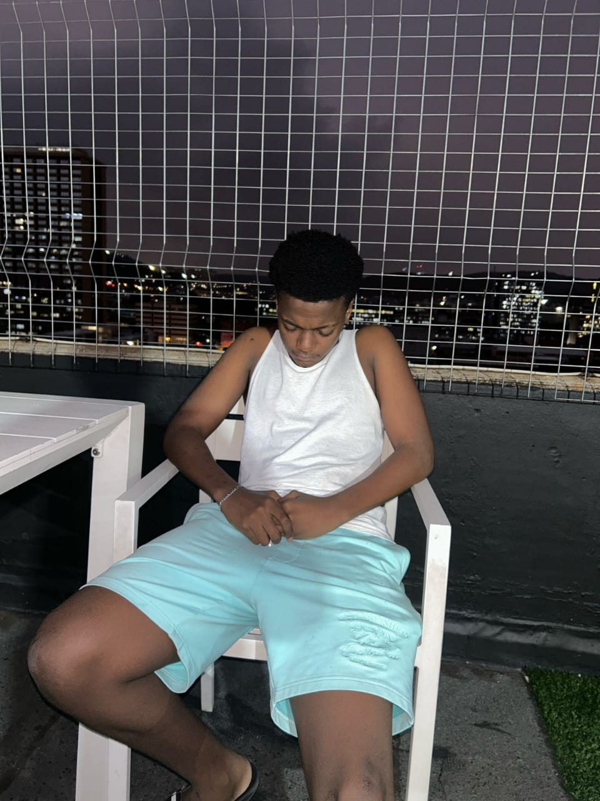
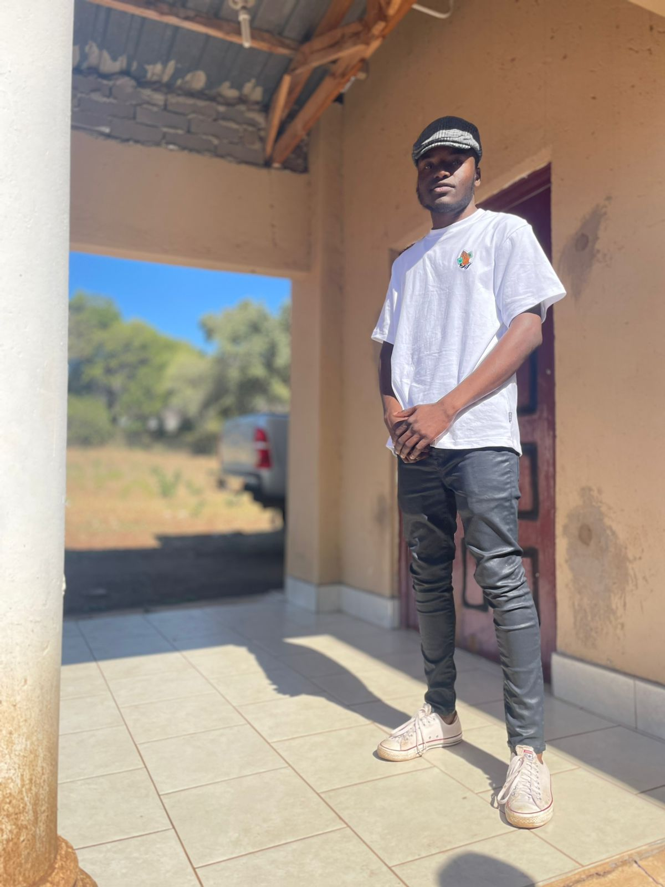
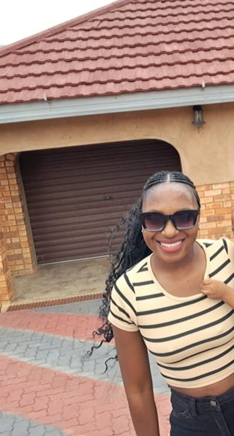
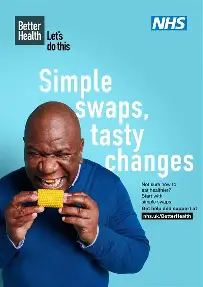

About Our Organization
Driven by Purpose. United in Action.
Driven by Purpose. United in Action.
At Hope Connect Foundation, our mission is to build stronger, more equitable communities by uniting individuals and organizations around common goals. We champion initiatives in education, environmental sustainability, and social justice—empowering underserved populations and amplifying local voices.
Every project we undertake is rooted in collaboration, compassion, and a commitment to meaningful change.
We envision inclusive, resilient communities where people have the opportunity, support, and confidence to improve their lives and contribute to positive social change.
Hope Connect Foundation began as a small volunteer collective in 2020, responding to urgent community needs during a time of global uncertainty. What started with food drives and local cleanups has since evolved into a full-fledged organization serving communities nationwide.
Today, we continue to grow through partnerships, innovation, and the passion of volunteers who believe that real change starts with unity. From grassroots organizing to policy advocacy, we’re proud to be a force for good wherever we go.

CEO & Founder

Chief Technology Officer

Director of Outreach

Program Manager